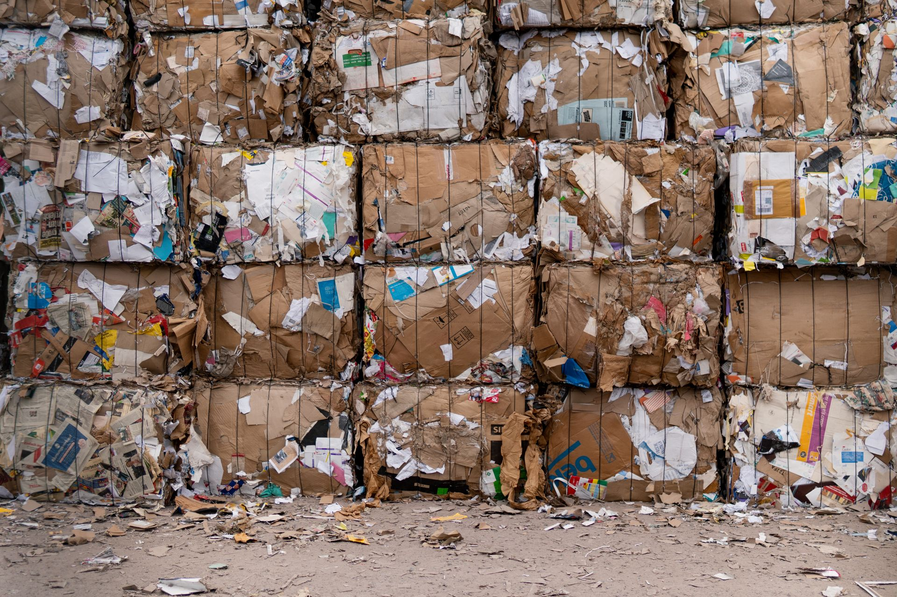
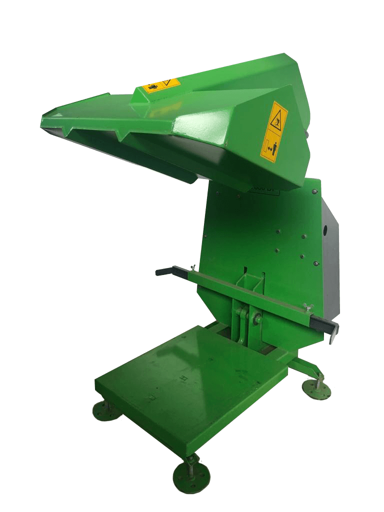

Machines van wereldklasse
verdienen een digitaal platform
van wereldklasse.
Jullie RVS afvalpersen zijn precisiewerk: strak gelast, zwaar getest, gebouwd om jaren mee te gaan. Deze pitch laat zien hoe dat niveau van vakmanschap er digitaal uit hoort te zien.
Jullie machines zijn bij, de website staat stil.
Dit is geen kritiek op wat er nu staat: het heeft z'n werk gedaan. Maar sinds 2023 is er niets meer aan veranderd, en in die tijd is B2B-inkoop online radicaal veranderd. Drie dingen kosten jullie nu concreet omzet:
Strak, industrieel, en levend onder je aanraking.
Geen stockfoto-generiek design. Elk vlak, elke lijn en elke beweging verwijst naar wat jullie bouwen: staal, druk, precisie. De machine reageert op je aanraking. Dat gevoel geven we het platform ook.

Productshowcase die verkoopt
360°-achtige presentatie, specificaties die meebewegen, en details die tonen waarom RVS de juiste keuze is.

Micro-interacties met betekenis
Knoppen die reageren als een goed gebouwde machine: direct, strak, zonder overbodige franje. Elke animatie heeft een reden.

Vertrouwen door helderheid
Duidelijke capaciteiten, duidelijke sectoren, duidelijke vervolgstap. Geen ruis tussen bezoeker en offerte.
← Swipe voor meer →
Modern, stabiel en klaar voor de lange termijn.
Precies zoals jullie machines: onder de motorkap zit serieuze techniek. Wij zorgen dat het draait.
Resultaat: een platform dat meegroeit met Velthof, zonder dat jullie er omkijken naar hebben.
Eén heldere structuur, per sector doorzoekbaar.
Vijf pijlers. De kern: bezoekers vinden binnen twee klikken de pers die bij hún sector past.
Home
Directe intro, sterke machine, sociaal bewijs en één duidelijke actie.
Onze Afvalpersen
Filterbaar op sector: Zorg, Industrie, Recycling.
Maatwerk & Engineering
Van tekening tot oplevering: alles behalve standaard.
Service & Onderhoud
Storing, onderhoudscontracten en reactietijden op een rij.
Contact & Offerte
Één kort formulier, direct gekoppeld aan sector en machine.
Zullen we dit concept
samen tot leven brengen?
Geen verplichtingen, gewoon een kort gesprek van 20 minuten om te kijken of de klik er is, en of dit concept past bij waar Velthof nu staat.
Geen verplichtingen. We reageren binnen één werkdag.
Studio Orange · Concept-presentatie · 2026